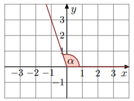
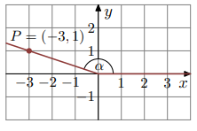
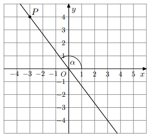
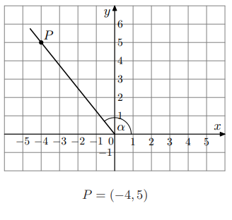

W kartezjańskim układzie współrzędnych (x, y) zaznaczono kąt o mierze α taki, że \( \tan \alpha = -3 \) oraz \( 90^\circ < \alpha < 180^\circ \) (zobacz rysunek).

Uzupełnij zdanie. Wybierz dwie właściwe odpowiedzi spośród oznaczonych literami A – F:
Odp.: B,F.
Zad. 2
(grudzień 2023 - zad. 16)
Dane są dwa kąty α oraz β:
• \( \alpha \in (0^\circ,180^\circ), \tan \alpha = -\tfrac{2}{3} \)
• \( \beta \in (0^\circ,180^\circ), \cos \beta = \tfrac{1}{\sqrt{10}} \)
2.1 Kąt α jest zaznaczony na rysunku …
2.2 Kąt β jest zaznaczony na rysunku …
Wpisz odpowiedzi w formacie np. „A,C”:
Odp.: B,D.
Zad. 3
(maj 2023 - zad. 18)
W kartezjańskim układzie współrzędnych (x, y) zaznaczono kąt α o wierzchołku w O = (0,0). Jedno ramię kąta pokrywa się z dodatnią półosią Ox, a drugie przechodzi przez punkt P = (−3,1) (zobacz rysunek).

Tangens kąta α jest równy:
Odp.: D.
Zad. 4
(sierpień 2020 - zad. 16)
Punkty P = (−3,4) i O = (0,0) leżą na jednej prostej. Kąt α jest kątem nachylenia tej prostej do osi Ox (zobacz rysunek).

Wtedy tangens kąta α jest równy:
Odp.: B.
Zad. 5
(maj 2015 - zad. 14)
Tangens kąta α zaznaczonego na rysunku jest równy (zobacz rysunek).
